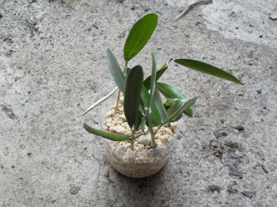
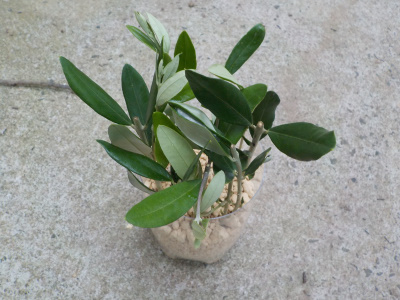
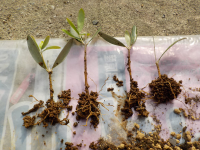
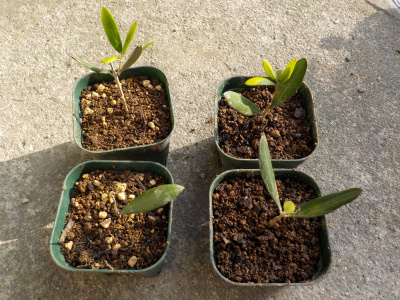
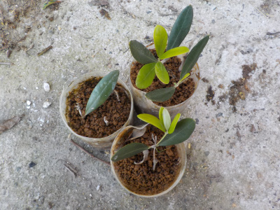
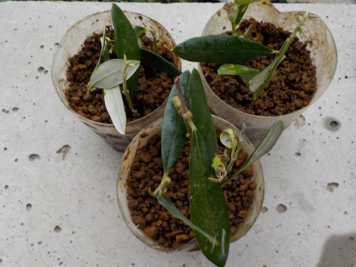
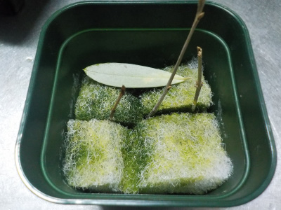
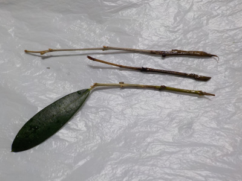
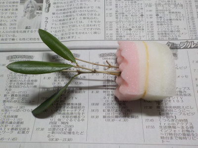

遊びで植物を育てよう
2021/07/03
オリーブの挿し木を追加しました。

今回は500ミリリットルのペットボトルなので、小さいいサイズの挿し木です。
挿し穂の大きさによる違いはたぶんありますよね。
大きい方が成功率が高そうな気がしますが、結果はどうなるでしょうね。
【オリーブTOP】
【果物TOP】
【園芸TOP】
2021/06/27
オリーブの挿し木をまた始めました。

もういらないって思っていましたが、オリーブは垣根にもなるみたいなので今年も挿し木で増やすことにしました。
今回は1，5リットルのペットボトルを用意したので、挿し木が前回より大きめです。
ペットボトルに10本くらい挿し木しました。
いらない枝を剪定すると思うので、その都度挿し木しようと思っています。
【オリーブTOP】
【果物TOP】
【園芸TOP】
2021/05/23
オリーブの挿し木に根っこがありました。

オリーブの挿し木に4本成功しました。
失敗してからの成功なのでどってもうれしい。

大事に育てて大きくしたいです。
オリーブってもう増やす必要ってないかな。家に5本もあれば十分な気がします。
次は違う品種のオリーブを買って増やすか、実生を育てたいかな。
【オリーブTOP】
【果物TOP】
【園芸TOP】
2021/01/31
オリーブの挿し木が成長しています。

7月に挿し木そしたオリーブです。
4本葉っぱが残っていて、3本は新芽が出ています。
成長して欲しいですね。
【オリーブTOP】
【果物TOP】
【園芸TOP】
2020/07/04
オリーブの密閉挿しをしました。

どうなるかなー。
オリーブの挿し木の成功率ってどれくらいでしょうね。
【オリーブTOP】
【果物TOP】
【園芸TOP】
2020/05/16
挿し木のオリーブの葉っぱが落ちました。

半年くらい付いていた葉っぱが落ちてしまいました。
枯れ木になりました。
しばらく放置してみまうが、枯れたんだろうな。
【オリーブTOP】
【果物TOP】
【園芸TOP】
2020/02/27
水挿しのオリーブです。

1本は葉っぱが残っていて、茎が緑です。
でも根はありません。
このまま様子を見ます。
【オリーブTOP】
【果物TOP】
【園芸TOP】
2019/11/02
スポンジ挿し木のその後

ちょっと葉っぱがしおれました。
【オリーブTOP】
【果物TOP】
【園芸TOP】
2019/10/20
1週間前にオリーブの挿し木をしました。
スポンジを水に漬けて水挿しです。

これで根っこが出たら楽ちんでいいんだけどな。
【オリーブTOP】
【果物TOP】
【園芸TOP】
2019/08/04
オリーブ フラントイオをペットボトルで挿し木。
ブルベリーの挿し木と一緒に挿しました。

ついでです。
土が酸性だけど大丈夫かな？
（その後すぐに枯れました。）
【オリーブTOP】
【果物TOP】
【園芸TOP】
オリーブは葉っぱが美しいいなんて言うけど、特別そんなこと思わない。
漬物を作って食べたい。
【おいしいものを食べよう。】【たくさん寝よう。】
【ソロ活をしよう!】【季節感のあることをしよう。】【動画視聴はほどほどに。】【当サイトの全てのコンテンツは無断転載禁止です。】